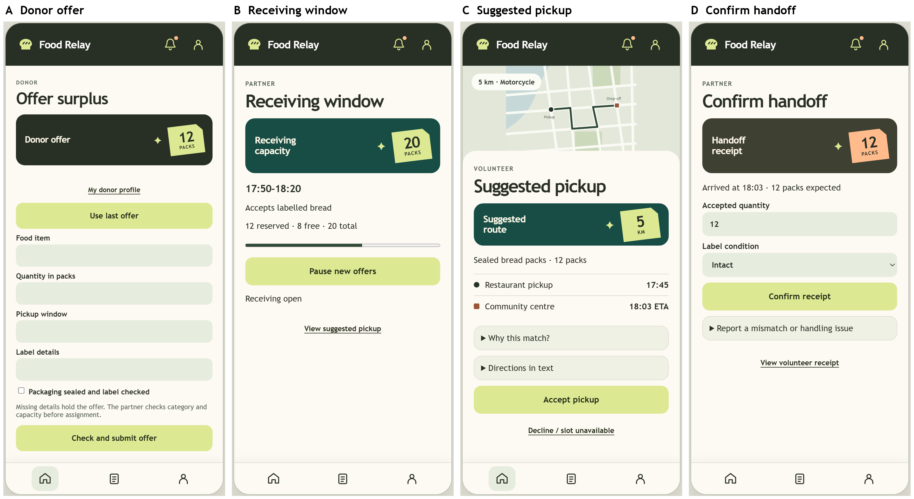
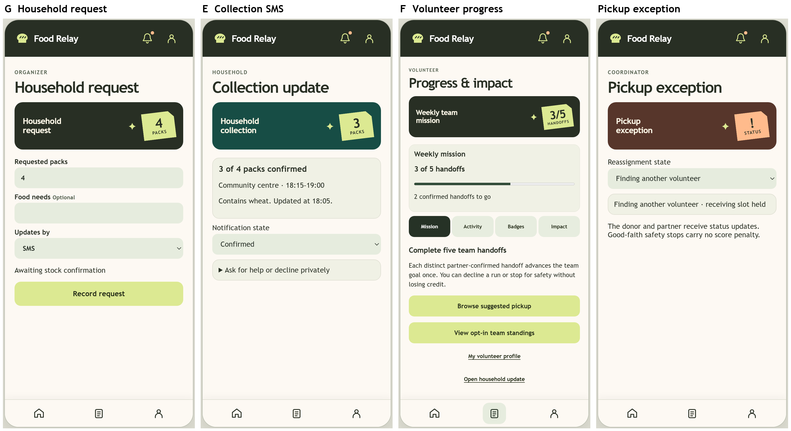

Example scenario. A restaurant offers 12 sealed bread packs for pickup from 17:35 to 17:55. The partner can receive 20 packs from 17:50 to 18:20. A motorcycle volunteer picks up at 17:45 and arrives at 18:03. An organizer requests four packs for a household, and the partner confirms three based on available stock. Times and quantities are illustrative.


Interaction notes. The donor and partner set the offer and receiving capacity. The volunteer sees why the route fits and can accept or decline. Partner confirmation records the accepted quantity and credits the volunteer. The organizer can log requests received digitally or by phone. The partner sends the household its confirmed allocation before travel. If no replacement can meet the cutoff, the run closes, the donor is notified, and the partner’s slot is released.